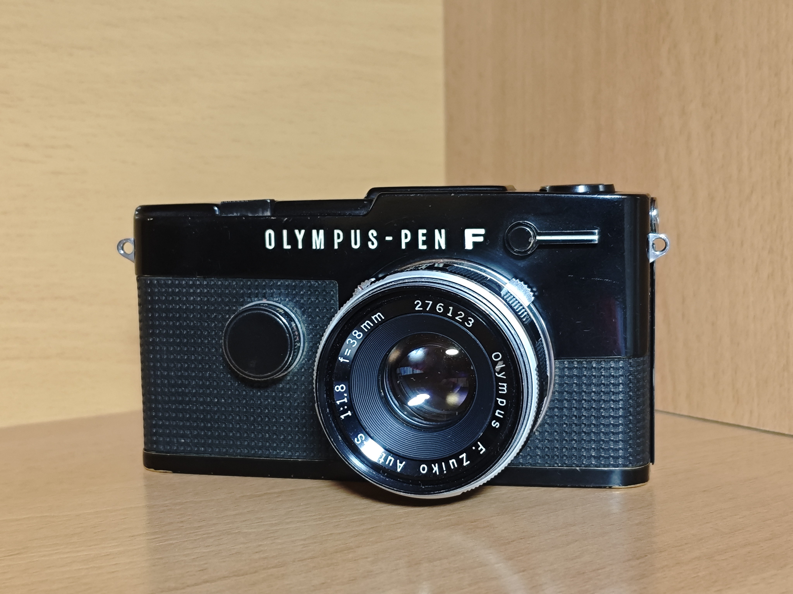

Olympus Pen FT
Precio: 20€ / día
La Olympus Pen FT es una de las cámaras más singulares de la fotografía analógica. Fabricada en Japón durante los años 60, es una cámara réflex de medio formato que utiliza película de 35mm para producir fotografías verticales de medio fotograma.
Su reducido tamaño, su diseño mecánico y su particular visor hacen de la Pen FT una cámara especialmente interesante para quienes buscan una experiencia de fotografía analógica diferente.
Características principales:
- Formato de medio fotograma (Half Frame).
- Utiliza película estándar de 35mm.
- Hasta 72 fotografías aproximadamente por carrete de 36 exposiciones.
- Sistema réflex de objetivos intercambiables.
- Visor réflex con fotómetro incorporado.
- Cuerpo compacto y completamente mecánico.
- Fabricación japonesa de los años 60.